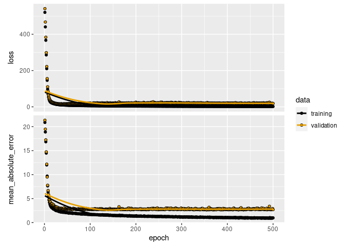

Chapter 13 Econometrics with GPUs
GPUs have been used for a while in computational economics (see Aldrich (2014) for an overview of early applications in economics). However, until recently most of the work building on GPUs in economics has focused on solving economic models numerically (see, e.g., Aldrich et al. (2011)) and more broadly on Monte Carlo simulation. In this chapter, we first look at very basic GPU computation with R, before having a look at the nowadays most common application of GPUs in applied econometrics: machine learning with neural networks.
13.1 OLS on GPUs
In a first simple tutorial, we have a look at how GPUs can be used to speed up basic econometric functions, such as the implementation of the OLS estimator. To this end, we will build on the gpuR package introduced in Chapter 5. To keep the example code simple, we follow the same basic set up to implement and test our own OLS estimator function as in Chapter 3. That is, we first generate a sample based on (pseudo-)random numbers. To this end, we first define the sample size parameters n (the number of observations in our pseudo-sample) and p (the number of variables describing each of these observations) and then initialize the dataset X.
set.seed(1)
# set parameter values
n <- 100000
p <- 4
# generate a design matrix (~ our 'dataset')
# with p variables and n observations
X <- matrix(rnorm(n*p, mean = 10), ncol = p)
# add column for intercept
#X <- cbind(rep(1, n), X)Following exactly the same code as in Chapter 3, we can now define what the real linear model that we have in mind looks like and compute the output y of this model, given the input X.
# MC model
y <- 1.5*X[,1] + 4*X[,2] - 3.5*X[,3] + 0.5*X[,4] + rnorm(n)Now we re-implement our beta_ols function from Chapter 3 such that the OLS estimation is run on our local GPU. Recall that when computing on the GPU, we have the choice between keeping the data objects that go into the computation in RAM, or we can transfer the corresponding objects to GPU memory (which will further speed up the GPU computation). In the implementation of our beta_ols_gpu, I have added a parameter that allows switching between these two approaches. While setting gpu_memory=TRUE is likely faster, it might fail due to a lack of GPU memory (in all common desktop and laptop computers, RAM will be substantially larger than the GPU’s own memory). Hence, gpu_memory is set to FALSE by default.
beta_ols_gpu <-
function(X, y, gpu_memory=FALSE) {
require(gpuR)
if (!gpu_memory){
# point GPU to matrix (matrix stored in non-GPU memory)
vclX <- vclMatrix(X, type = "float")
vcly <- vclVector(y, type = "float")
# compute cross products and inverse
XXi <- solve(crossprod(vclX,vclX))
Xy <- crossprod(vclX, vcly)
} else {
# point GPU to matrix (matrix stored in non-GPU memory)
gpuX <- gpuMatrix(X, type = "float")
gpuy <- gpuVector(y, type = "float")
# compute cross products and inverse
XXi <- solve(crossprod(gpuX,gpuX))
Xy <- t(gpuX) %*% gpuy
}
beta_hat <- as.vector(XXi %*% Xy)
return(beta_hat)
}Now we can verify whether the implemented GPU-run OLS estimator works as expected.
beta_ols_gpu(X,y)## [1] 1.5037 3.9997 -3.5036 0.5003beta_ols_gpu(X,y, gpu_memory = TRUE)## [1] 1.5033 3.9991 -3.5029 0.5005Note how the coefficient estimates are very close to the true values. We can rest assured that our implementation of a GPU-based OLS estimator works fairly well. Also note how simple the basic implementation of functions to compute matrix-based operations on the GPU is through the gpuR package.
13.2 A word of caution
From just comparing the number of threads of a modern CPU with the number of threads of a modern GPU, one might get the impression that parallelizable tasks should always be implemented for GPU computing. However, whether one approach or the other is faster can depend a lot on the overall task and the data at hand. Moreover, the parallel implementation of tasks can be done more or less well on either system. Really efficient parallel implementation of tasks can take a lot of coding time (particularly when done for GPUs).67
As it turns out, the GPU OLS implementation above is actually a good example of a potential pitfall. While, as demonstrated in Chapter 4, matrix operations per se are likely much faster on GPUs than CPUs, the simple beta_ols_gpu() function implemented above involves more than the simple matrix operations. The model matrix as well as the vector of the dependent variable first had to be prepared for these operations (either a pointer for the GPU to the object in RAM had to be created, or the objects had to be transferred to GPU memory). Finally, the computed values need to be transferred back to a normal R-object (at least if we want to make the output consistent with our simple beta_ols() implementation from Chapter 3). All of these steps create an additional overhead in terms of computing time.68 Depending on the problem at hand, this overhead resulting from preparatory steps before running the actual computations on the GPU might be dwarfed by the efficiency-gain if the computing task is much more demanding then what is involved in OLS. The section on TensorFlow/Keras below points to exactly such a setting, where GPUs are typically much faster than CPUs.
13.3 Higher-level interfaces for basic econometrics with GPUs
The CRAN Task View on High-Performance and Parallel Computing with R lists several projects that provide easy-to-use interfaces to canned implementations of regression and machine learning algorithms running on GPUs. For example, the tfestimators package provides an R interface to use the TensorFlow Estimators framework by Cheng et al. (2017). The package provides various canned estimators to be run on GPUs (through TensorFlow).69 Note, however, that this framework is only compatible with TensorFlow version 1. As we will build on the latest version of TensorFlow (version 2) in the following example (and as most applications now build on version 2), we will not go into details of how to work with tfestimators. However, there are excellent vignettes provided with the package that help you get started.70
13.4 TensorFlow/Keras example: predict housing prices
The most common application of GPUs in modern econometrics is machine learning, in particular deep learning (a type of machine learning based on artificial neural networks). Training deep learning models can be very computationally intensive and to an important part depends on tensor (matrix) multiplications. This is also an area where you might come across highly parallelized computing based on GPUs without even noticing it, as the now commonly used software to build and train deep neural nets (TensorFlow; Abadi et al. (2015), and the high-level Keras API; Chollet et al. (2015)) can easily be run on a CPU or GPU without any further configuration/preparation (apart from the initial installation of these programs). In this chapter, we look at a simple example of using GPUs with Keras in the context of predictive econometrics.
In this example we train a simple sequential model with two hidden layers to predict the median value of owner-occupied homes (in USD 1,000) in the Boston area (data is from the 1970s). The original data and a detailed description can be found here: https://www.cs.toronto.edu/~delve/data/boston/bostonDetail.html. The example follows closely this Keras tutorial published by RStudio. See RStudio’s Keras installation guide for how to install Keras (and TensorFlow) and the corresponding R package keras (Allaire and Chollet 2022).71 While the purpose of the example here is to demonstrate a typical (but very simple!) use case of GPUs in machine learning, the same code should also run on a normal machine (without using GPUs) with a default installation of Keras.
Apart from keras, we load packages to prepare the data and visualize the output. Via dataset_boston_housing(), we load the dataset (shipped with the Keras installation) in the format preferred by the keras library.
# load packages
library(keras)
library(tibble)
library(ggplot2)
library(tfdatasets)
# load data
boston_housing <- dataset_boston_housing()
str(boston_housing)## List of 2
## $ train:List of 2
## ..$ x: num [1:404, 1:13] 1.2325 0.0218 4.8982 0.0396 3.6931 ...
## ..$ y: num [1:404(1d)] 15.2 42.3 50 21.1 17.7 18.5 11.3 15.6 15.6 14.4 ...
## $ test :List of 2
## ..$ x: num [1:102, 1:13] 18.0846 0.1233 0.055 1.2735 0.0715 ...
## ..$ y: num [1:102(1d)] 7.2 18.8 19 27 22.2 24.5 31.2 22.9 20.5 23.2 ...13.4.1 Data preparation
In a first step, we split the data into a training set and a test set. The latter is used to monitor the out-of-sample performance of the model fit. Testing the validity of an estimated model by looking at how it performs out-of-sample is of particular relevance when working with (deep) neural networks, as they can easily lead to over-fitting. Validity checks based on the test sample are, therefore, often an integral part of modeling with TensorFlow/Keras.
# assign training and test data/labels
c(train_data, train_labels) %<-% boston_housing$train
c(test_data, test_labels) %<-% boston_housing$testIn order to better understand and interpret the dataset, we add the original variable names and convert it to a tibble.
library(dplyr)
column_names <- c('CRIM', 'ZN', 'INDUS', 'CHAS', 'NOX', 'RM', 'AGE',
'DIS', 'RAD', 'TAX', 'PTRATIO', 'B', 'LSTAT')
train_df <- train_data %>%
as_tibble(.name_repair = "minimal") %>%
setNames(column_names) %>%
mutate(label = train_labels)
test_df <- test_data %>%
as_tibble(.name_repair = "minimal") %>%
setNames(column_names) %>%
mutate(label = test_labels)Next, we have a close look at the data. Note the usage of the term ‘label’ for what is usually called the ‘dependent variable’ in econometrics.72 As the aim of the exercise is to predict median prices of homes, the output of the model will be a continuous value (‘labels’).
# check training data dimensions and content
dim(train_df)## [1] 404 14head(train_df) ## # A tibble: 6 × 14
## CRIM ZN INDUS CHAS NOX RM AGE DIS
## <dbl> <dbl> <dbl> <dbl> <dbl> <dbl> <dbl> <dbl>
## 1 1.23 0 8.14 0 0.538 6.14 91.7 3.98
## 2 0.0218 82.5 2.03 0 0.415 7.61 15.7 6.27
## 3 4.90 0 18.1 0 0.631 4.97 100 1.33
## 4 0.0396 0 5.19 0 0.515 6.04 34.5 5.99
## 5 3.69 0 18.1 0 0.713 6.38 88.4 2.57
## 6 0.284 0 7.38 0 0.493 5.71 74.3 4.72
## # … with 6 more variables: RAD <dbl>, TAX <dbl>,
## # PTRATIO <dbl>, B <dbl>, LSTAT <dbl>,
## # label <dbl[1d]>As the dataset contains variables ranging from per capita crime rate to indicators for highway access, the variables are obviously measured in different units and hence displayed on different scales. This is not a problem per se for the fitting procedure. However, fitting is more efficient when all features (variables) are normalized.
spec <- feature_spec(train_df, label ~ . ) %>%
step_numeric_column(all_numeric(), normalizer_fn = scaler_standard()) %>%
fit()13.4.2 Model specification
We specify the model as a linear stack of layers: the input (all 13 explanatory variables), two densely connected hidden layers (each with a 64-dimensional output space), and finally the one-dimensional output layer (the ‘dependent variable’).
# Create the model
# model specification
input <- layer_input_from_dataset(train_df %>% select(-label))
output <- input %>%
layer_dense_features(dense_features(spec)) %>%
layer_dense(units = 64, activation = "relu") %>%
layer_dense(units = 64, activation = "relu") %>%
layer_dense(units = 1)
model <- keras_model(input, output)In order to fit the model, we first have to compile it (configure it for training). At this step we set the configuration parameters that will guide the training/optimization procedure. We use the mean squared errors loss function (mse) typically used for regressions. We chose the RMSProp optimizer to find the minimum loss.
# compile the model
model %>%
compile(
loss = "mse",
optimizer = optimizer_rmsprop(),
metrics = list("mean_absolute_error")
)Now we can get a summary of the model we are about to fit to the data.
# get a summary of the model
model13.4.3 Training and prediction
Given the relatively simple model and small dataset, we set the maximum number of epochs to 500.
# Set max. number of epochs
epochs <- 500Finally, we fit the model while preserving the training history, and visualize the training progress.
# Fit the model and store training stats
history <- model %>% fit(
x = train_df %>% select(-label),
y = train_df$label,
epochs = epochs,
validation_split = 0.2,
verbose = 0
)
plot(history)
13.5 Wrapping up
gpuRprovides a straightforward interface for applied econometrics run on GPUs. While working withgpuR, be aware of the necessary computationl overhead to run commands on the GPU via this interface. For example, implementing the OLS estimator withgpuRis a good exercise but does not really pay off in terms of performance.- There are several ongoing projects in the R world to bring GPU computation closer to basic data analytics tasks, providing high-level interfaces to work with GPUs (see the CRAN Task View on High-Performance and Parallel Computing with R for some of those).
- A typical application of GPU computation in applied econometrics is the training of neural nets, particularly deep neural nets (deep learning). The
kerasandtensorflowpackages provide excellent R interfaces to work with the deep learning libraries TensorFlow and Keras. Both of those libraries are implemented to directly work with GPUs.
References
For a more detailed discussion of the relevant factors for well-designed parallelization (either on CPUs or GPUs), see Matloff (2015).↩︎
You can easily verify this by comparing the performance of
beta_ols()(the simple CPU-based implementation) with the here implementedbeta_ols_gpu()through thebench::mark()function.↩︎See https://cran.r-project.org/web/packages/tfestimators/vignettes/estimator_basics.html for an introduction to the basic usage of the package.↩︎
See https://cran.r-project.org/web/packages/tfestimators/.↩︎
This might involve the installation of additional packages and software outside the R environment. The following examples were run with TensorFlow version
tensorflow_gpu-2.9.3.↩︎Typical textbook examples in machine learning deal with classification (e.g., a logit model), while in microeconometrics the typical example is usually a linear model (continuous dependent variable).↩︎